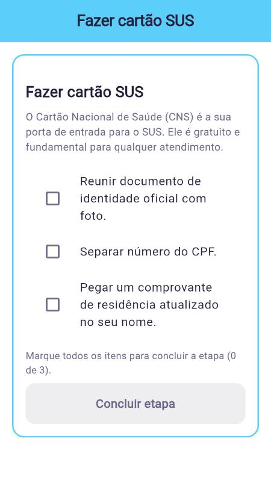
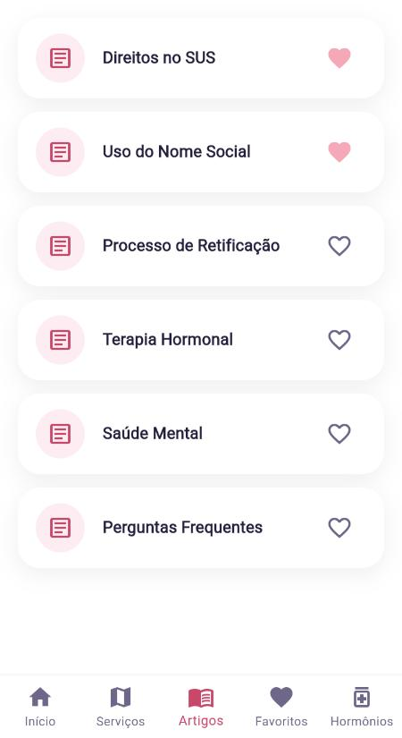

Orienta+
A guide for trans people in Brazil’s public health system (SUS): from the first visit at a primary care unit to a referral to specialized care.
- My role
- App foundation, architecture and security
- When
- Apr to Oct 2026
- Team
- 3 people · 166 of 208 commits are mine
- Result
- Top 4 of 17 at BioChallenge and a final at CBEB





The app’s interface is in Portuguese.
Why it exists
Navigating the SUS is already hard. For trans people, there is still little clear information about which services are welcoming, respect their chosen name and offer specialized care.
Orienta+ brings it all together: a step-by-step journey from the primary care unit to the specialized clinic, a map of services with filters, community reviews, articles that work offline and a hormone therapy calendar with reminders.
What I built
- The Flutter app architecture, with Riverpod for state, go_router for navigation and Hive to store data on the device.
- Security on Supabase with Row Level Security: the database only returns each person’s own data, and reviews show only the chosen name.
- The account deletion flow and the protection of sensitive data.
- An accessibility audit: 130% font size, high contrast, larger touch targets, screen reader labels and dark mode in the app and on the map.
- Preparing the FastAPI backend for Render and address search with OpenStreetMap and Photon.
- The Android release build: permissions, signing and build rules.
What was hard
Combining different data sources
Health facilities come from OpenStreetMap, and the services accredited for transgender care come from CNES/DataSUS, Brazil’s national health facility registry. The app combines both with community reviews.
Protecting contributors
A suggested place is pinned on the map by the address typed in, never by the location of the person suggesting it, and stays “unverified” until the team reviews it.
Reminders that vanished in the final APK
Reminders worked in development but not in the release APK. Android’s code shrinking removed classes used by the notifications, so the build rules had to be adjusted.
Team
Emily Horrana (backend, API integrations and the hormone therapy module), Bruna (interface design, flows and visual identity) and me. Advised by Christopher Lima.